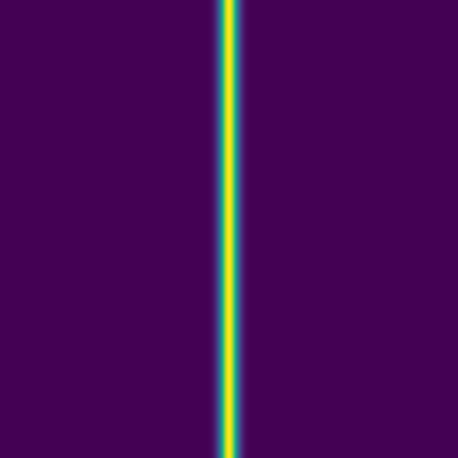
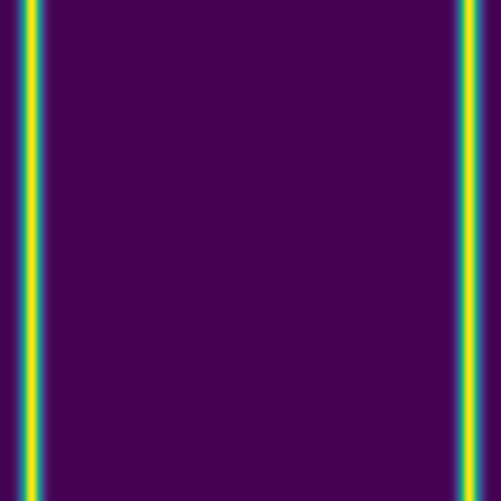

Couple of side training projects that use Chapel
September 10th, 2025
These sessions are not focused on teaching Chapel itself, but rather on providing an opportunity to introduce the audience – academic researchers from diverse fields and our HPC users – to Chapel while covering other topics.
Generating a large ensemble of solutions for model training
The goal of this 4-hour ML course is to train a generative AI model on an ensemble of solutions from a 2D advection solver, and then use the model to predict solutions based on initial conditions. I am using a Chapel code to generate the solutions for model training.
Consider the following acoustic wave equation with \(c=1\) (speed of sound), written as a system separately for velocity and pressure: \[ \begin{cases} \partial\vec{v}/\partial t = -\nabla p\\\ \partial p/\partial t = -\nabla\cdot\vec{v} \end{cases} \]
Writing a full 3D solver is straightforward, but to reduce the model training time, we will implement it in 2D. Here is a multi-threaded implementation of this solver in Chapel acoustic2D.chpl:
use Image, Math, IO, sciplot, Time;
config const n = 501, nt = 350, nout = 5; // resolution, max time steps, plotting frequency
config const ANIMATION = true;
var h = 1.0 / (n-1);
const mesh = {1..n, 1..n};
const largerMesh = {0..n+1, 0..n+1};
const a = 0.1; // 0.1 - thick front, no post-wave oscillations; 0.5 - narrow front, large oscillations
var Vx: [largerMesh] real;
var Vy: [largerMesh] real;
var P: [largerMesh] real = [(i,j) in largerMesh] exp(-(a/h)**2*(((j-1)*h-0.5)**2));
var colour: [1..n, 1..n] 3*int;
var cmap = readColourmap('viridis.csv'); // cmap.domain is {1..256, 1..3}
if ANIMATION then plotPressure(0);
var dt = h / 1.6;
var watch: stopwatch;
watch.start();
for count in 1..nt {
forall (i,j) in mesh {
Vx[i,j] -= dt * (P[i,j]-P[i-1,j]) / h;
Vy[i,j] -= dt * (P[i,j]-P[i,j-1]) / h;
}
forall (i,j) in mesh do
P[i,j] -= dt * (Vx[i+1,j] - Vx[i,j] + Vy[i,j+1] - Vy[i,j]) / h;
periodic(P);
periodic(Vx);
periodic(Vy);
if count%nout == 0 && ANIMATION then plotPressure(count/nout);
}
watch.stop();
writeln('Simulation took ', watch.elapsed(), ' seconds');
proc periodic(A) {
A[0,1..n] = A[n,1..n]; A[n+1,1..n] = A[1,1..n]; A[1..n,0] = A[1..n,n]; A[1..n,n+1] = A[1..n,1];
}
proc plotPressure(counter) {
var smin = min reduce(P);
var smax = max reduce(P);
for i in 1..n {
for j in 1..n {
var idx = ((P[i,j]-smin)/(smax-smin)*255):int + 1; //scale to 1..256
colour[i,j] = ((cmap[idx,1]*255):int, (cmap[idx,2]*255):int, (cmap[idx,3]*255):int);
}
}
var pixels = colorToPixel(colour); // array of pixels
var filename: string;
if counter >= 1000 then filename = counter:string;
else if counter >= 100 then filename = "0"+counter:string;
else if counter >= 10 then filename = "00"+counter:string;
else filename = "000"+counter:string;
writeln("writing ", filename);
writeImage("frame"+filename+".png", imageType.png, pixels);
}with the following sciplot.chpl that reads a colour map from a CSV file:
use IO;
use List;
proc readColourmap(filename: string) {
var reader = open(filename, ioMode.r).reader();
var line: string;
if (!reader.readLine(line)) then // skip the header
halt("ERROR: file appears to be empty");
var dataRows : list(string); // a list of lines from the file
while (reader.readLine(line)) do // read all lines into the list
dataRows.pushBack(line);
var cmap: [1..dataRows.size, 1..3] real;
for (i, row) in zip(1..dataRows.size, dataRows) {
var c1 = row.find(','):int; // position of the 1st comma in the line
var c2 = row.rfind(','):int; // position of the 2nd comma in the line
cmap[i,1] = row[0..c1-1]:real;
cmap[i,2] = row[c1+1..c2-1]:real;
cmap[i,3] = row[c2+1..]:real;
}
reader.close();
return cmap;
}To run it:
chpl --fast acoustic2D.chpl
./acoustic2D --nt=5000For a single point source:
For two point sources:
Some representative solutions
Here are solutions for point sources at the same fixed time:
Since advection proceeds in the direction of the pressure gradient, a 1D initial condition produces a flat 1D wave:


Here combining 0D (point-source) and 1D features:
The plan is to feed thousands of these pairs of images – the initial conditions and the solution at the same fixed time – to a deep neural network, to train it to produce the solution from arbitrary initial conditions.
Could also demo a \(4001^2\) solution clip ~/training/jax/large.mkv with 10_000 time steps.
Benchmarking Chapel vs. Julia
Out of curiosity, I implemented exactly the same solver in Julia using ParallelStencil.jl, state-of-the-art Julia package that can run in parallel using either multi-core CPUs (on top of Base.Threads) or GPUs (on top of CUDA.jl, AMDGPU.jl, or Metal.jl). I ran both codes on the same machine (M1 MacBook Pro), for the same problem size (\(501^2\), 5000 time steps), turning off animation in both cases.
| code | 1 CPU thread | 8 CPU threads | Metal |
|---|---|---|---|
| Chapel | 1.716s | 0.471s | |
| Julia | 7.29s | 2.60s | 23.59s (problem too small) |
For the record, in Julia you see a speedup on the M1 GPU in 3D at \(512^3\): with 9000 time steps going from 8 CPU threads to Metal reduces the runtime from 39m to 11m40s.
GPU efficiency on NVIDIA’s H100 cards
These GPUs can be challenging to utilize effectively: most off-the-shelf software packages achieve well below 75% utilization on a full GPU. I plan to use a simple Chapel code to demonstrate profiling steps. The challenge is that my current code is too efficient, maintaining 100% GPU usage. I’ve manually degraded its efficiency for demonstration purposes, but I’d prefer to start with a less efficient version and then optimize it, so perhaps I need to consider a different numerical problem.
Prime factorization of an integer number is finding all its prime factors. For example, the prime factors of 60 are 2, 2, 3, and 5. Let’s write a function that takes an integer number and returns the sum of all its prime factors. For example, for 60 it will return 2+2+3+5 = 12, for 91 it will return 7+13 = 20, for 101 it will return 101, and so on.
Since 1 has no prime factors, we start computing from 2, and then apply this function to all integers in the range 2..n, where n is a larger number. We will do all computations separately from scratch for each number, i.e. we will not cache our results (caching can significantly speed up our calculations but the point here is to focus on brute-force computing).
Here is the GPU version of the code primesGPU.chpl (the CPU version is very similar, with obvious simplifications):
use Time;
var watch: stopwatch;
proc primeFactorizationSum(n: int) {
var num = n, total = 0, count = 0;
while num % 2 == 0 {
num /= 2;
count += 1;
}
for j in 1..count do total += 2;
for i in 3..(sqrt(n:real)):int by 2 {
count = 0;
while num % i == 0 {
num /= i;
count += 1;
}
for j in 1..count do total += i;
}
if num > 2 then total += num;
return total;
}
config const a = 2, n = 10;
on here.gpus[0] {
var A: [a..n] int;
watch.start();
@assertOnGpu foreach i in a..n do
A[i] = primeFactorizationSum(i);
watch.stop(); writeln('It took ', watch.elapsed(), ' seconds');
var lastFewDigits = if n > 5 then n-4..n else a..n; // last 5 or fewer digits
writeln("A = ", A[lastFewDigits]);
}Running it on a full H100 card on the cluster:
module load gcc/12.3 cuda/12.2 chapel-ucx-cuda/2.4.0
chpl --fast primesGPU.chpl
salloc --time=... --mem-per-cpu=3600 --gpus-per-node=h100:1 --account=...
./primesGPU -nl 1 --n=1_000_000| n | single-core CPU time in sec | GPU time in sec | speedup factor | GPU memory in MiB |
|---|---|---|---|---|
| 1e6 | 0.5330 | 0.000717 | 743 | |
| 10e6 | 16.49 | 0.017904 | 921 | |
| 100e6 | 516.8 | 0.5456 | 947 | |
| 1e9 | 16.91 | |||
| 2e9 | 48.10 | |||
| 3e9 | 88.31 | |||
| 5e9 | 270.8 | 38670 | ||
| 10e9 | 1357 | 76816 |
Running nvidia-smi on the GPU node, we see GPU utilization at 100%, and power consumption of 263W / 316W/ 318W / 267W (different stages of the same job) out of max 700W.
Moving some of the calculations to the host
Divide the entire range 2..n into 100 groups. Next, divide each group into 10 items (each still being a range), of which the first 9 items are processed on the GPU, and the last one on the CPU in serial – a nice demo of Amdahl’s Law.
use Time;
import RangeChunk.chunks;
var watch: stopwatch;
proc primeFactorizationSum(n: int) {
var num = n, total = 0, count = 0;
while num % 2 == 0 {
num /= 2;
count += 1;
}
for j in 1..count do total += 2;
for i in 3..(sqrt(n:real)):int by 2 {
count = 0;
while num % i == 0 {
num /= i;
count += 1;
}
for j in 1..count do total += i;
}
if num > 2 then total += num;
return total;
}
config const a = 2, n = 5_000_000_000;
on here.gpus[0] {
var A: [a..n] int;
watch.start();
for group in chunks(a..n, 100) {
for item in chunks(group, 10) {
if item.last < group.last then
@assertOnGpu foreach i in item do // first 9 items in each group are processed on the GPU
A[i] = primeFactorizationSum(i);
else
for i in item do // last item in each group is processed on the CPU
A[i] = primeFactorizationSum(i);
}
}
watch.stop(); writeln('It took ', watch.elapsed(), ' seconds');
var lastFewDigits = if n > 5 then n-4..n else a..n; // last 5 or fewer digits
writeln("A = ", A[lastFewDigits]);
}On a full H100, this runs at 10% GPU efficiency, consuming 112W out of max 700W.
In the actual workshop, in addition to nvidia-smi, I am hoping to use NVIDIA’s Nsight profilers (if those can work with Chapel-compiled binaries) and our cluster’s monitoring portal (not yet in production). Combine this with MIG partitions and MPS scheduling.
How do I go in the opposite direction, starting from an inefficient code? Need a simple numerical problem for which a naive implementation results in a poorly-performing GPU code which would be simple to improve. Here are a couple of things to try:
1. the 3D version of the acoustic wave solver should run inefficiently for smaller problems on a GPU
2. 2D acoustic wave solver for very large problems
3. a Julia set should suffer from load imbalance, but not sure if it’ll show when running on a GPU